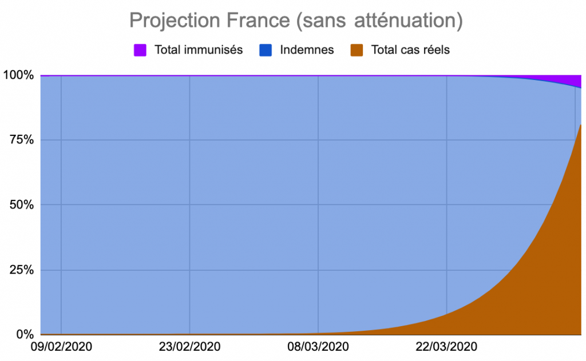
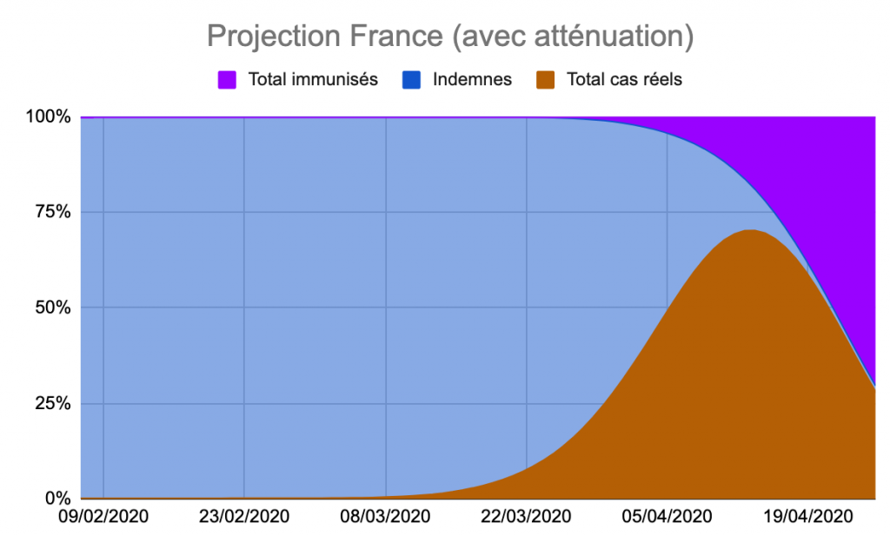
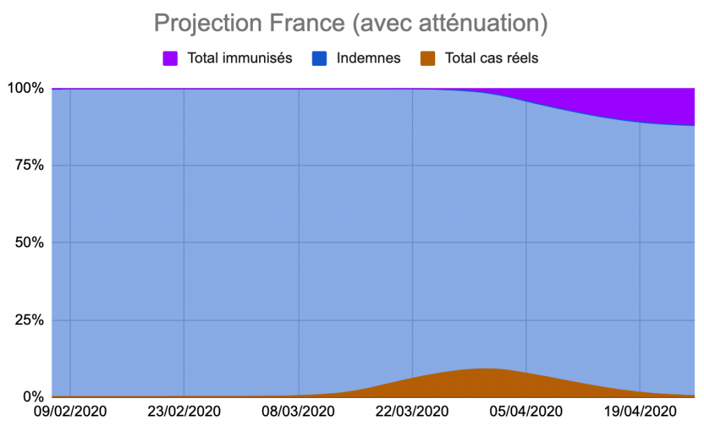

Les stats me soignent du coronavirus
 Regarder les chiffres,
jouer avec les statistiques est sans doute une de mes façons de
vivre la pandémie, de l’accepter. Je sais que ces jeux n’ont que
peu de rapport avec la situation réelle, mais ils m’aident à en
comprendre la gravité. Chacun sa névrose.
Regarder les chiffres,
jouer avec les statistiques est sans doute une de mes façons de
vivre la pandémie, de l’accepter. Je sais que ces jeux n’ont que
peu de rapport avec la situation réelle, mais ils m’aident à en
comprendre la gravité. Chacun sa névrose.
Plus je consulte d’études, plus je me dis que ma première proposition n’est pas satisfaisante quand on la prolonge ni en accord avec les données dont nous disposons.
Voilà ce qu’il me paraît nécessaire de changer.
- J’étais parti sur un taux de mortalité initial de 0,5 %, je pense qu’il faut utiliser le 0,86 % mesuré en Corée du Sud qui effectue un dépistage systématique tout en disposant d’un des meilleurs systèmes de santé au monde, avec deux fois plus de lits en soins intensifs pour mille habitants que nous. Il est plus que probable que nous ne ferons pas mieux, et sans doute moins bien (avec toutefois l’espoir d’un premier traitement).
- Pour calculer le nombre de cas réels 17 jours en arrière, je conserve la même méthode (zone située en dessus de la ligne violette dans le tableau ci-dessous). En revanche, pour calculer les cas réels après cette date, supposer une pure progression exponentielle n’a pas beaucoup de sens. Je préfère appliquer la même croissance que celle constatée sur le terrain. Cela pose pas mal de problèmes parce que nous ne testons que les cas extrêmes, mais on ne dispose pas d’autres données.
- Pour aller vers l’avenir, au-delà de la ligne rouge, une première possibilité : appliquer la dernière progression constatée sur le terrain et la répéter de jour en jour. Malheureusement ainsi toute la population est très vite infectées comme le montre le graphique ci-dessous.

Projection irréaliste
- Je pense qu’il faut donc appliquer un facteur d’atténuation à partir de date de confinement (17/3), qui prend en compte les mesures de distanciation sociale et aussi le fait que peu à peu de plus en plus de gens sont immunisés, ce qui est très bien expliqué dans un article du Washington Post. On peut ainsi prolonger la simulation plus loin dans le temps. Bien sûr, je ne peux pas savoir quand la croissance se stabilisera ou s’infléchira (sans doute au bout d'une semaine minimum, temps d'incubation avant premiers symptômes). Je suis parti sur un modèle en cloche, mais on peut imaginer tout ce que l'on veut sauf la perpétuelle croissance exponentielle.

Autre possibilité
- Le nombre de cas réels étant calculé en fonction du taux de mortalité supposé, toute erreur dans le calcul du nombre de morts projeté impliquera de revoir le taux de mortalité (qui malheureusement augmentera en même temps que le système de santé approchera de la saturation).
- Le nombre de morts sur les 17 prochains jours est calculé en fonction du taux de mortalité et des données officielles publiées 17 jours plus tôt. Il ne dépend guère de la projection de la courbe vers le futur. Si on suppose qu'après le confinement il n'y a plus de nouveaux cas (improbable bien sûr), on obtient une courbe beaucoup plus rassurante, avec néanmoins un nombre de morts total conséquents de 20 000 (deux fois une grippe saisonnière). C'est sans doute le scénario le plus optimiste et je le trouve déjà assez terrible.
- Je mets à 0 le nombre projeté de cas relevés car il n'a aucun sens vu qu'il ne dépend que de notre capacité à dépister.
- L'estimation du nombre de cas en réanimation est pas très bonne, donc difficile de savoir quand le système hospitalier saturera.

Confinement hyper efficace
Liens vers le tableau… je le mets à jour tous les soir.
Suite | 2020 | Sommaire | Texte publié mercredi 18 mars 2020